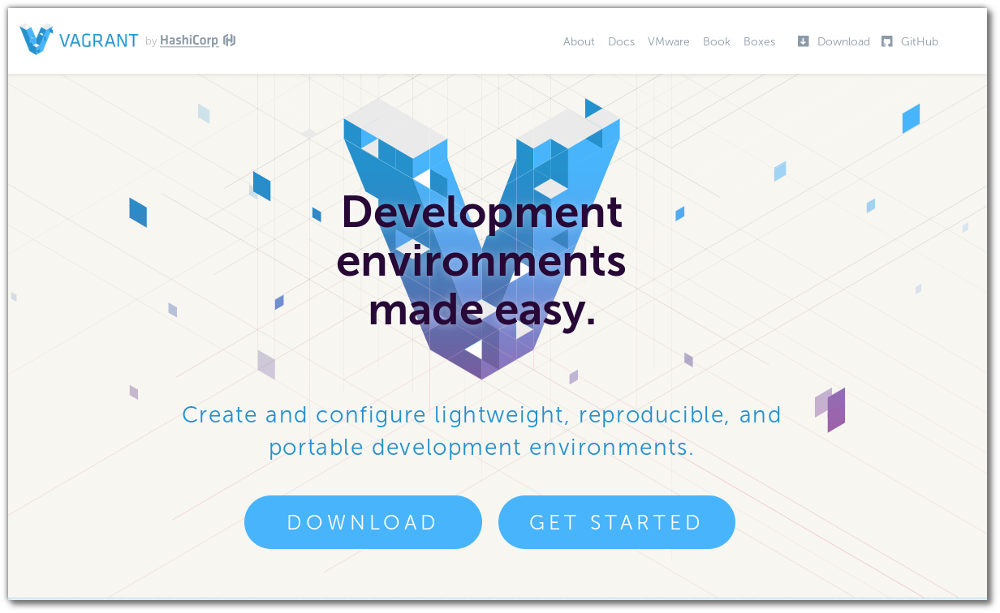
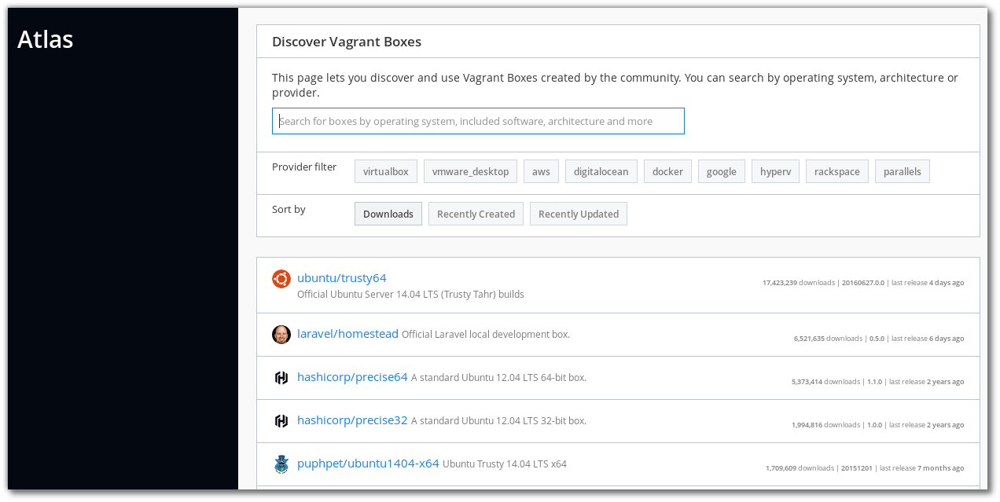
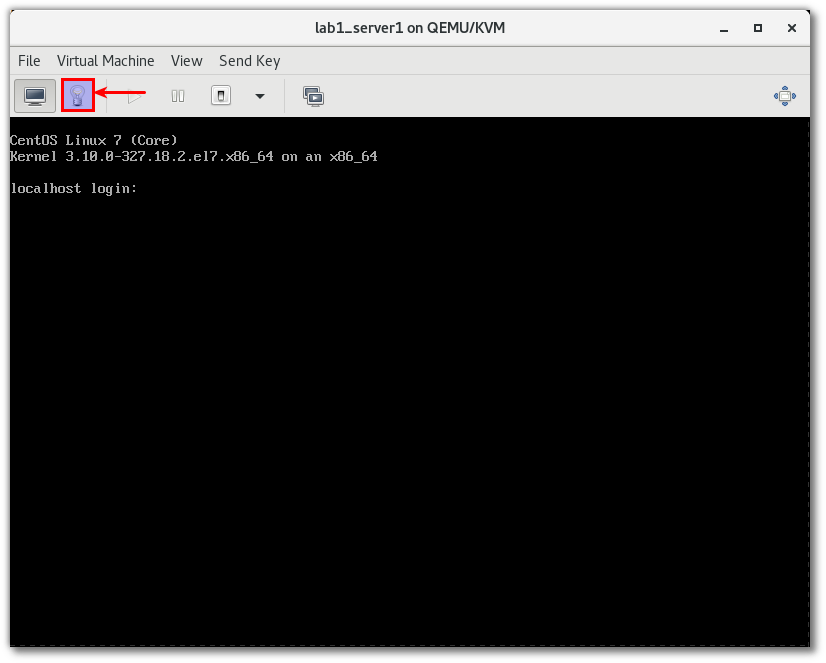
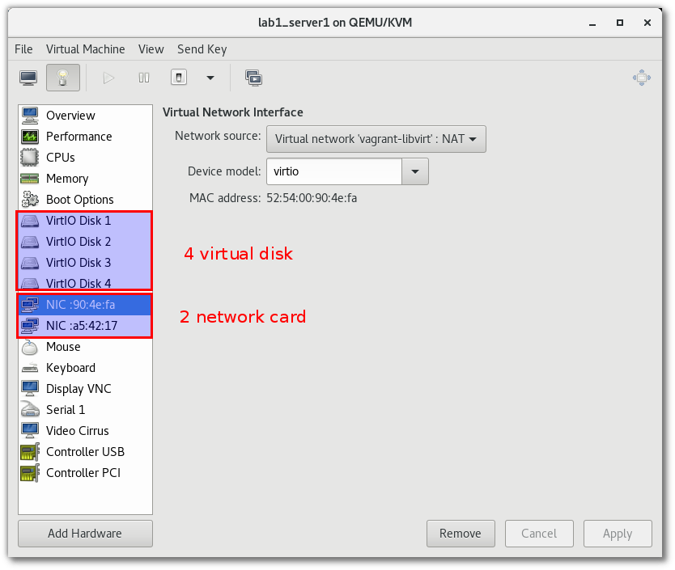

Build Infrastructure¶
Vagrant¶
การใช้งาน vagrant เพื่อสร้าง development environment
Install vagrant¶
การติดตั้ง vagrant จะแตกต่างกันระหว่าง os ขั้นตอนต่อไปนี้เป็นการติดตั้ง vagrant บน Fedora 24
sudo dnf group install "C Development Tools and Libraries"
sudo dnf install ruby-devel zlib-devel
sudo dnf install libxslt libxslt-devel libxml2 libxml2-devel redhat-lsb
sudo dnf install libxslt-devel libxml2-devel libvirt-devel libguestfs-tools-c ruby-devel
sudo dnf install redhat-rpm-config patch
sudo gem install nokogiri -v '1.6.8'
wget https://releases.hashicorp.com/vagrant/1.8.4/vagrant_1.8.4_x86_64.rpm
sudo dnf install vagrant_1.8.4_x86_64.rpm
ติดตั้ง plugin เพื่มเติิมสำหรับ libvirt
vagrant plugin install vagrant-libvirt
vagrant plugin install vagrant-scp
repository¶
vagrant ได้เตรียม image ไว้มากมายเพื่อให้เราสามารถใช้งาน ได้ โดยสามารถค้นหาและdownload image เพื่อเตรียมทดสอบ https://atlas.hashicorp.com/boxes/search
อีกที่หนึ่ง http://www.vagrantbox.es/

Download box¶
Note
การสั่งคำสั่ง vagrant cli สามารถใช้งาน ใน user ปรกติไม่จำเป็น root โดย vagrant จะสร้าง directory ให้ที่ $HOME/.vagrant.d/
$ vagrant box add centos/7
==> box: Loading metadata for box 'centos/7'
box: URL: https://atlas.hashicorp.com/centos/7
This box can work with multiple providers! The providers that it
can work with are listed below. Please review the list and choose
the provider you will be working with.
1) libvirt
2) virtualbox
Enter your choice:
add box อื่น ยกตัวอย่างเช่น:
vagrant box add fedora/24-cloud-base
vagrant box add ubuntu/trusty64
vagrant box add debian/jessie64
สร้าง project directory เพื่อการทดสอบ ชื่อ project01 และ download vagrant box
$ mkdir project01
$ cd project01
$ vagrant init centos/7
$ cat Vagrantfile
(result เมื่อลบ comment ออก)
# -*- mode: ruby -*-
# vi: set ft=ruby :
Vagrant.configure("2") do |config|
config.vm.box = "centos/7"
end
$ vagrant up --provider libvirt
คำสั่ง vagrant init จะสร้าง Vagrantfile ต้นแบบ เนื้อหาใน file ส่วนมากเป็นตัวอย่าง config การ
ใช้งาน บน virtualbox แต่ในการทดสอบนี้จะทำการสร้าง VM บน KVM hypervisor โดยตรง ที่ผ่านมาจึง
ต้องทำการติดตั้ง plugin ชื่อ vagrant-libvirt
เพิ่มเติม vagrantfile ด้านล่าง
# -*- mode: ruby -*-
# vi: set ft=ruby :
Vagrant.configure("2") do |config|
config.vm.box = "centos/7"
config.vm.define :server1 do |node|
node.vm.hostname = "server1.example.com"
node.vm.network :private_network, :ip => "20.0.0.10"
node.vm.provider :libvirt do |domain|
domain.uri = 'qemu+unix:///system'
domain.driver = 'kvm'
domain.memory = 8192
domain.cpus = 2
domain.nested = true
domain.volume_cache = 'none'
domain.storage :file, :size => '20G'
domain.storage :file, :size => '20G'
domain.storage :file, :size => '20G'
end
end
config.vm.define :server2 do |node|
node.vm.hostname = "server2.example.com"
node.vm.network :private_network, :ip => "20.0.0.11"
node.vm.provider :libvirt do |domain|
domain.uri = 'qemu+unix:///system'
domain.driver = 'kvm'
domain.memory = 2048
domain.cpus = 2
domain.nested = true
domain.volume_cache = 'none'
end
end
end
กดเลือก double click lab1_server1 (lab1 ชื่อ project directory และ server1 เป็น ชื่อ VM)
กดเลือก รูปหลอดไฟเพื่อดูรายละเดียด
Connect to VM¶
สามารถเชื่อมผ่าน vagrant ssh [ชื่อ server] โดยที่ชื่อ ของ Server จะเป็นค่าที่กำหนดแก่ define
vagrant ssh server1
vagrant ssh server2
File System Synce¶
vagrant ได้ทำการ sync file system ให้ระหว่าง host และ vm ผ่านทาง /home/vagrant/sync
ทำให้ vm สามารถใช้งาน file จากภายนอกได้โดยตรง แต่ถ้าหากมีการเปลี่ยนแปลง file ใน host จะ
ต้องสั่ง vagrant reload ก่อนการใช้งาน vm